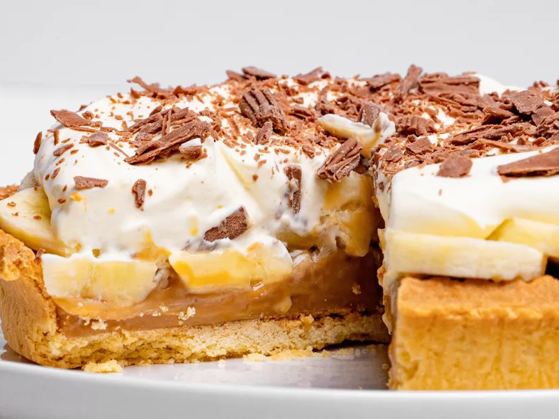

Bananoffe
Ingredientes
200 gr de bolacha
120 gr de manteiga sem sal
1 pote de doce de leite
18 bananas
400ml de leite fresco
Modo de Preparo
Triture bem a bolacha
Misture a manteiga derretida até formar uma massa.
Espalhe a massa em uma forma com fundo removível, apertando bem com os dedos.
Deixe em um freezer por 10 minutos. Coloque o doce de leite, que não pode ser mole.
Depois cubra com as bananas cortadas ao meio.
Por último, bata a nata com um pouco de açúcar até virar chantilly e cubra a torta com ele.